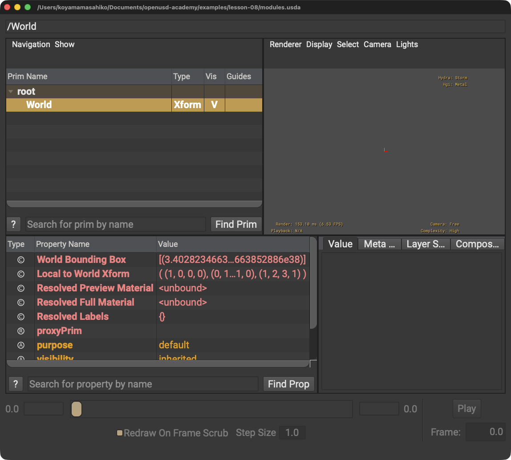

Gfをimportしない
原因: Gf.Vec3dの名前が使えません。
解決策: import行にGfを加えます。
LESSON 08 · AUTHORING
役割に合うモジュールを選びます
今日これだけ
公式情報に基づく説明
Usdは作成・合成・読み取りの中心、SdfはLayerやPath、Gfはグラフィックス向け数学型を提供します。UsdGeomはgeometryのSchemaモジュールです。
USDA
#usda 1.0
def Xform "World"
{
double3 xformOp:translate = (1, 2, 3)
uniform token[] xformOpOrder = ["xformOp:translate"]
}double3は3成分の数値、丸括弧は3値、角括弧は配列です。引用符内はtoken値です。波括弧とインデントはWorld Primの内容を示します。

Worldを選択すると、左下のProperty領域でxformOp:translateとxformOpOrderを確認できます。Diagram
Python
from pxr import Usd, UsdGeom, Gf
stage = Usd.Stage.CreateNew("modules.usda")
world = UsdGeom.Xform.Define(stage, "/World")
xform = UsdGeom.XformCommonAPI(world)
xform.SetTranslate(Gf.Vec3d(1, 2, 3))
stage.Save()fromは取得元、importは使う名前を示します。ピリオドはモジュールやオブジェクト内の機能へ進む記号です。
USDA → Python mapping
USDA
def Xform "World"↓Python
UsdGeom.Xform.Define(stage, "/World")USDA
xformOp:translate = (1, 2, 3)↓Python
xform.SetTranslate(Gf.Vec3d(1, 2, 3))Beginner notes
よくある間違い
原因: Gf.Vec3dの名前が使えません。
解決策: import行にGfを加えます。
解決策: 役割に応じて必要なモジュールだけimportします。
Glossary
Official references
確認日: